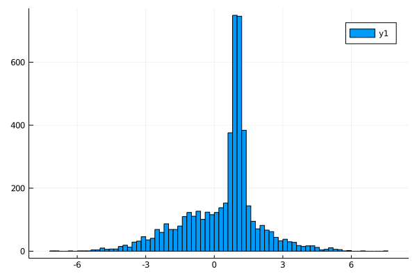

A gaussian mixture model
First of all we define our model,
using KissABC
using Distributions
function model(P, N)
μ_1, μ_2, σ_1, σ_2, prob = P
d1 = randn(N) .* σ_1 .+ μ_1
d2 = randn(N) .* σ_2 .+ μ_2
ps = rand(N) .< prob
R = zeros(N)
R[ps] .= d1[ps]
R[.!ps] .= d2[.!ps]
R
endmodel (generic function with 1 method)Let's use the model to generate some data, this data will constitute our dataset
parameters = (1.0, 0.0, 0.2, 2.0, 0.4)
data = model(parameters, 5000)5000-element Array{Float64,1}:
1.3195218306039207
1.1780809562277
0.3864073794082212
0.7873342105773459
1.0558320101860763
1.4996655325898118
2.2775193184464904
0.9022147163646975
-0.5654067068387134
0.7292023555327737
⋮
-3.816007648381935
0.986276444465673
0.8657906080977856
0.7226616642705277
0.8945438917259021
0.910298652104168
1.2381091968028297
1.2585349709408884
0.5864250284863525let's look at the data
using Plots
histogram(data)
savefig("ex1_hist1.svg");
we can now try to infer all parameters using KissABC, first of all we need to define a reasonable prior for our model
prior = Factored(
Uniform(0, 2), # there is surely a peak between 0 and 2
Uniform(-1, 1), #there is a smeared distribution centered around 0
Uniform(0, 1), # the peak has surely a width below 1
Uniform(0, 4), # the smeared distribution surely has a width less than 4
Beta(2, 2), # the number of total events from both distributions look about the same, so we will favor 0.5 just a bit
);let's look at a sample from the prior, to see that it works
rand(prior)(1.0734904338635674, -0.941769747876462, 0.09761105150987937, 3.1782554447654716, 0.6608681911498715)now we need a function to compute summary statistics for our data, this is not the optimal choice, but it will work out anyway
function S(x)
r = (0.1, 0.2, 0.5, 0.8, 0.9)
quantile(x, r)
endS (generic function with 1 method)we will define a function to use the model and summarize it's results
summ_model(P, N) = S(model(P, N));now we need a distance function to compare the summary statistics of target data and simulated data
summ_data = S(data)
D(P, N = 5000) = sqrt(mean(abs2, summ_data .- summ_model(P, N)));we can now run ABCDE to get the posterior distribution of our parameters given the dataset data
approx_density = ApproxPosterior(prior, D, 0.05)
res, _ = mcmc(approx_density, nparticles = 100, generations = 500, verbose = 0)([(0.9883618075758961, 0.0702595788685569, 0.27749056540379613, 1.9978757181071325, 0.3997306824829955), (1.0612174066027975, 0.059306036107322754, 0.09793941807167005, 1.7406572926063124, 0.2853800299354052), (0.9484546245884501, 0.01720296386051729, 0.2430520134757067, 2.135267608225717, 0.4537048606748014), (0.9474506272464374, -0.07955290008349383, 0.2086674960817998, 2.1700320869352643, 0.4356044115839046), (0.9684980169972847, -0.03143407084492964, 0.2468501382886435, 2.029174786898789, 0.42783439824062985), (1.0534679623090883, 0.07259697296751054, 0.12398518465477791, 1.8768227202619512, 0.3462499621376062), (1.0427003828647878, -0.07627225676302461, 0.18498668761130174, 1.9413629254063869, 0.4005289237902863), (1.039086268631996, -0.08907065881009431, 0.17046298122321635, 1.9273971465813906, 0.34434382675171094), (0.9766571652873648, 0.039143202860240395, 0.17527127008250265, 1.9682879215432814, 0.3950490276875668), (1.0204534831207954, 0.0573173953863015, 0.18576335043174438, 1.860772412251799, 0.3607204600458456) … (0.996052287700421, 0.030086539227943895, 0.23626247099545458, 2.2088681550007214, 0.46475512165676264), (1.0041705208675755, -0.01783268676536967, 0.23723372618275324, 2.028587861915356, 0.41214534703714323), (1.0092505430526968, -0.017602948113983337, 0.18642501595007996, 2.1356153538872524, 0.44966671549181664), (1.0334181083106135, 0.015710279453954715, 0.17253060553129448, 1.8633269290112269, 0.3716218240957078), (1.0227016948237773, -0.008665794402728143, 0.16206032387730993, 2.017769897571586, 0.38863671241980097), (0.9802698906029559, 0.07279063549697029, 0.20865231372661902, 2.0040730318453397, 0.40472130486160957), (1.027160177986989, 0.04512845680147415, 0.17450773413447837, 1.9939212077288992, 0.3923171942977217), (0.9738334650727898, 0.08377454092510539, 0.15602387039348817, 2.0434556742495316, 0.397437128313249), (0.974049208261402, -0.009665642299513253, 0.23805843098310187, 1.972212138807202, 0.3805277677875935), (0.983219518839207, 0.02182422883822947, 0.17103661820920887, 1.9025630761008538, 0.3523105426967975)], NamedTuple{(:logprior, :cost),Tuple{Float64,Float64}}[(logprior = -2.408170367388749, cost = 0.04855342179213751), (logprior = -2.570767189583813, cost = 0.04537529449111514), (logprior = -2.375733533035967, cost = 0.04842855259198713), (logprior = -2.383849888831003, cost = 0.04679363305623282), (logprior = -2.388175147221423, cost = 0.026260846500857398), (logprior = -2.466453789529493, cost = 0.04452996398426045), (logprior = -2.4075061010924648, cost = 0.043957969830877436), (logprior = -2.4690626309991996, cost = 0.04081059919435893), (logprior = -2.412182515802186, cost = 0.044095376789487065), (logprior = -2.4478946780748374, cost = 0.03970248835363755) … (logprior = -2.372104805489525, cost = 0.04088017807083126), (logprior = -2.398484011265655, cost = 0.025871218307848488), (logprior = -2.3773090683228126, cost = 0.04252773720732693), (logprior = -2.435320899531896, cost = 0.04765961105280943), (logprior = -2.4180034437787374, cost = 0.03041297882209185), (logprior = -2.404111425814569, cost = 0.045074785184761275), (logprior = -2.414616084574334, cost = 0.030295134320840102), (logprior = -2.4101110458889736, cost = 0.04894754891136454), (logprior = -2.42591278207128, cost = 0.04029113606829691), (logprior = -2.4584154518110717, cost = 0.024916670065650678)])let's see the median and 95% confidence interval for the inferred parameters and let's compare them with the true values
getstats(V) =
(median = median(V), lowerbound = quantile(V, 0.025), upperbound = quantile(V, 0.975));
labels = (:μ_1, :μ_2, :σ_1, :σ_2, :prob)
P = [getindex.(res, i) for i = 1:5]
stats = getstats.(P)
for is in eachindex(stats)
println(labels[is], " ≡ ", parameters[is], " → ", stats[is])
endμ_1 ≡ 1.0 → (median = 1.006971979586237, lowerbound = 0.9351543383355111, upperbound = 1.1182767762712602)
μ_2 ≡ 0.0 → (median = 0.014957340386730397, lowerbound = -0.44459470050485617, upperbound = 0.09122885122897331)
σ_1 ≡ 0.2 → (median = 0.19377904554195968, lowerbound = 0.11858070571087315, upperbound = 0.4407297417096677)
σ_2 ≡ 2.0 → (median = 1.964284593150667, lowerbound = 1.7562635959601625, upperbound = 2.1847246815953913)
prob ≡ 0.4 → (median = 0.39302275914045603, lowerbound = 0.3143258226268569, upperbound = 0.512437277577618)The inferred parameters are close to nominal values
This page was generated using Literate.jl.